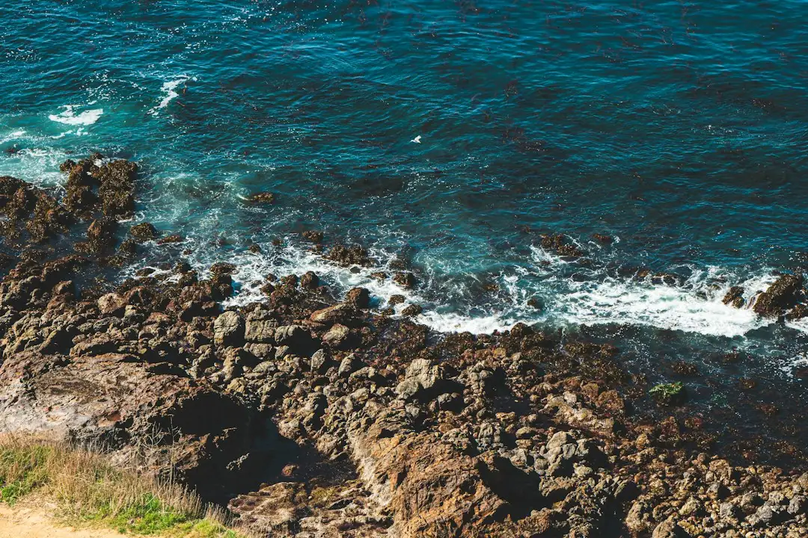

For homeowners comparing retaining wall costs sunshine coast options, the useful starting point is wall height, length, ground type, drainage need and whether council or engineering approval is likely.
Retaining Wall Costs Sunshine Coast Explained
Retaining Wall Sunshine Coast frames cost by square metre of wall face, which is height multiplied by length. That matters because a short, high wall can involve more structure, excavation and drainage than a long, low garden edge. The published example is clear: a wall 1.2 metres high and 10 metres long is 12 square metres of face, not 10 metres of wall.
Before asking for quotes, measure the exposed face as accurately as possible and describe what sits above it. A driveway, boundary fence, garden bed, slope or nearby structure changes the question from material preference to load, access and approval pathway. The source page also points readers to a cost calculator, which is useful when the job is still being scoped rather than ready for a fixed quote.
What Moves The Price
The page names several wall types, but the decision should not begin with appearance alone. Concrete sleepers between galvanised posts are described as the workhorse choice for many replacement jobs. Timber sleepers are positioned for gardens, terraces and low boundary retaining. Core-filled besser block is linked with taller, rendered and engineered work. Rock and boulder walls need room to batter back into the slope, while gabions suit free-draining structures on sloping or erosion-prone sites.
- Height and length: these determine wall face area and influence engineering questions.
- Ground: Blackall Range basalt clay, Buderim volcanic soil, Landsborough sandstone and coastal dune sand are treated as different site conditions.
- Drainage: ag drain, gravel and geofabric are described as part of every discussed scope.
- Access and repairs: replacement of failing, bulging or cracked walls may involve more than rebuilding the visible face.
Approval And Engineering Checks
The source guide says Sunshine Coast Council requires a building permit before construction, modification or repair of most retaining walls. It also states that council acts as a concurrence agency for walls over 2 metres. For taller or loaded walls, the page refers to an engineered pathway using AS 4678, with RPEQ Form 15 design certification and Form 16 inspection certification.
A practical quote request should therefore ask whether the wall is below or above 1 metre, whether it carries a surcharge, and whether the work is new construction, modification or repair. Licensing should not be guessed from the trade label. The page states that QBCC licensing is triggered by the value of the work, not the wall height. The linked overview of retaining walls on the Sunshine Coast is a useful companion for readers still deciding what type of wall they are dealing with.
Who This Applies To
This guide applies to owners planning a new retaining wall, replacing a wall that is cracked or bulging, comparing material choices, or checking whether an existing wall needs engineering or approval attention. It is especially relevant where the site has a fall that affects usable space, a boundary change, or a load above the wall.
It is less useful for a purely decorative garden edge that does not retain meaningful ground, because the source page focuses on retaining structures, drainage and approval questions. Even then, the same quote inputs help keep the discussion clear: height, length, suburb or postcode, what sits above the wall, whether access is tight, and whether the ground is clay, volcanic soil, sandstone or coastal sand.
Quote Inputs That Prevent Confusion
A good quote request gives the contractor enough detail to separate a simple landscaping discussion from a structural retaining wall discussion. The source page asks for height, length, what sits above the wall and the suburb or postcode. That is a compact brief, but it captures most of the information needed to decide whether the next step is a material estimate, an approval checklist, a drainage plan or an engineered design.
- Measure the height at the tallest point, not just the average height.
- Measure the full length of the wall face.
- Describe the material currently in place if it is a repair or replacement.
- Note nearby loads, including paths, fences, driveways or built structures.
- Ask whether drainage is included as ag drain, aggregate and geofabric rather than treated as an optional extra.
Reading Indicative Bands Carefully
The published figures should be treated as indicative bands, not universal prices. Rock and boulder walls are listed at around $150 to $300 per square metre, while timber sleepers are listed at $300 to $450 per square metre. Those ranges still need to be read against access, excavation, drainage, engineering and approval requirements.
A lower face-area band may not be cheaper overall if the site needs more machine time, more drainage work or more preparation. A higher material band may be the clearer option where finish, height or site conditions make a lighter solution unsuitable. The most useful comparison is a written scope that names the wall type, drainage layer, approval responsibility and certification pathway where required.
- Measure face area. Record the tallest height and full length so the wall can be priced by square metre of face.
- Describe site load. Note anything above the wall, including a fence, driveway, slope, garden bed or structure.
- Check approval early. Ask whether the work is construction, modification or repair and whether council or engineering input is needed.
- Compare written scopes. Look for the wall material, drainage detail, excavation assumptions and certification pathway in each quote.
| Decision point | What the source guide says | Question to ask before quoting |
|---|---|---|
| Pricing unit | Costs are discussed by square metre of wall face. | What is the height multiplied by the full length? |
| Timber sleeper band | Timber sleepers are listed at around $300 to $450 per square metre. | Is the wall low garden retaining or a larger structural job? |
| Rock and boulder band | Rock and boulder walls are listed at around $150 to $300 per square metre. | Is there enough room to batter the wall back into the slope? |
| Approval trigger | Most construction, modification or repair work needs a building permit according to the source guide. | Who checks the permit position before work is priced? |
| Engineering path | Walls over 1 metre or carrying surcharge may need AS 4678 design and Form 15 or Form 16 certification. | Is an RPEQ design or inspection certificate required? |
This guide covers retaining wall cost inputs, material choices, drainage detail and approval questions for Sunshine Coast projects.